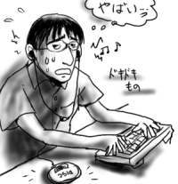

無線LANを導入しました。データが！(飛ぶよ！) 電波で！(飛ぶよ！)
昨年末、PowerBookG4のHDDを流体軸受のものに交換するついでにAirMacカードも装着しておいたのですが、そこで力(お金という名の)が尽きてしまってアクセスポイントまで予算がまわらず、結局半年ばかり有線で接続していましたが、この度、同僚から機器の相性に問題があって使えずに余らせている無線LANのアクセスポイントを安く譲ってもらうことになったのでした。これでぼくのPowerBookG4も本来の姿を、本来の力を取り戻すことが出来るのです。お前のパワーはまだまだそんなもんじゃないんだ！(ビカーン)
と勝手に盛り上がりながら、でも実体は、コンビニで買った(ご飯作るのが面倒くさかったから)キムチ焼きそばを口にねじ込みながら「最近の無線は小せぇナ！」と思いながらごそごそと地味に設置を済ませました。
そして、電源を入れたら何の問題もなく無線で通信が出来てしまい、逆に拍子抜けするくらいでした。まあ、ルータじゃなくてブリッジなので通信のために特に何の設定も必要ないのですが。一通り通信の確認を行った後、MACアドレスによる接続制限とWEPの設定を追加して完了です。集合住宅で暮らしていますが、周りの部屋の住人を見知らぬ電波で幸せにするほど、僕の心は広くない！電波の範囲は狭くていい！ウエェッヘー！(喜)
無駄に嬉しいので、あらゆる周辺機器をはぎとり電源ケーブルも引きちぎり(プラグ抜いただけです)、ゲーム音楽のストリーミング放送を垂れ流しながら、トイレに駆け込んでみました。ちゃんと聞こえるよ(当たり前)。そして机に戻って来ても配線がないことをいいことに、足をドッカと投げ出して膝上にPowerBookG4を乗せてダラダラと通信してみたりして、ピープルの知育玩具並にやりたい放題をかましてみました(地味)。
まぁ結局は今までと全く同じ様に机の上に置いて使うんですけど。PowerBookG4の本来の力も別にそんなにすごくなかった。トイレに行けるくらいだった。後は強いて挙げるなら、朝寝ぼけてケーブルにつまずかなくて済むくらいです(PowerBookG4の力は関係ない)。
そうそう、キムチ焼きそばはゲップする度に嫌な思いをするくらいまずかったよ。
思ったよりも人が減らなくて結局聴けませんでしたよ！イェッハ！
というオチを昨日の日記を書いた時点では予想していたのですが、フロアに人がいないっぷりは先週の日本予選三戦目の比ではありませんでした。というわけで音楽を聴きながら仕事をする夢は無事に達成できたのですが、フロアにいくら人が少ないとはいえ、決して0ではないので、逆に人目が気になって音楽効果が相殺され、結局普通の出来映えでした。感動をありがとう！(マスコミっぽく)

こんなことなら、FIFAワールドランキングを見ている先輩達の横から「赤川次郎は何位ですか？」という宛先の不明なチャチャを入れて訳の分からない立ち位置を確保していた方がよかったのではないか(よくありません)。
まぶたが踵にくっつきそうに眠いので今日はこのくらいで寝ます。
閉店間際のスーパーでレジ待ちをしているサラリーマンのおじさんは、なんでみんな半額になった寿司パックを買ってるのかなぁ(挨拶)。
実家の友人に教えてもらったoverrocketがなんだかすごく良くて、いろいろ込み上げました(Let's 試聴)。音楽は聴くだけで簡単に感情を操作できるのが便利で、落ち込みがちな心を高揚させるためによく利用させてもらっていますが、そう考えるとヨーロッパの方では、宗教音楽を建築物内の反響と組み合わせて民衆の信仰心の掌握に使っていたという話(聞きかじり)も大いに納得がいくなと思う次第ですが、なんでこの素晴らしい力を仕事に利用できないのか、いつも不思議です(僕の職場では「ながら仕事」は暗黙的に禁止になってます)。
簡単に言うと音楽を聴きながらコーディング出来れば少なくとも今の1.5倍は行くぜ？ということなのですが、個人々々がコードをガリガリ書くような職場ではないので仕方ないことなのでしょう(ほとんどの人は、コーディングより複数人で調整しながらの仕事の方が多い)。
さて、話は変わって明日はいよいよ日本決勝トーナメント初戦ですね！午後になるとまたもやフロアから大量の人が消えることが予測できます。ここで話は戻って、明日こそ、人目を気にせず、職場で音楽を聴きながらコーディングする、絶好の、そしておそらく最後の(不謹慎)チャンスではないでしょうか。ウキッ！盛り上がるね。
というわけでウキウキしながらCDを選んで明日の準備は万端です。おやすみなさい。実行出来るかどうかは限り無くグレーです(気が弱いから)。
昨日、indexの画像を差し換えてみましたが、これについて「いじりすぎ(エフェクトかけすぎ)」というようなことを言われたので説明しておきますと、これはデジカメで撮影した画像をトリミングして文字を入れただけで、ほとんど手を加えていないのです(多少ガンマ値はいじりました)。こんな絵も撮れるんだぜってことで単なるデジカメじまんです(最悪)。
今日は家にいました。
最近、家にいる時はRovoの「Tonic2001」ばかり聴いています。これだけ盛り上がるとライブに行きたくなるものですが、残念ながら友人連中には誰一人として誘えそうな人がいないため、ひとりぼっちの出撃が予想されます。それだったら家で膝を抱えながらヘッドフォンで没頭してても大差ないのではないかと思えてきました。僕は倹約家だなぁ。
考えてみたら、廻る寿司でも口頭で注文するのは僕にとって相当に勇気がいる行動で、出来れば一緒に入った人がまとめてやってくれればいいなぁと常に考えていますし、吉牛でのお茶のおかわりも必死に機会を伺い続けて狙いを定めてようやく頼むことが出来ます。僕が外で挙動不審だとよく言われるのは、間違いなくそういうコミュニケーション不全ぶりが原因なのであまり攻めないでやって下さい(誰ともなく)。
昨日の日記を読んだ友人達は、そろって僕が「あずまんが大王」を買ったことをおもしろがりやがりますが、まだまだハマり度は序の口です、平気ですよー(ちよボイスで)(←ダメだ！)。僕がガチャポンやジャンボカードダスを回し始めたら、止めてやってください(誰ともなく)。
聞いて下さい！僕は今日ついに『あずまんが大王1-4巻』(電撃コミックス)を一度に手に入れてしまいました。過去の自分は何を見て「あんまりおもしろくないな…」という判断を下したのか。(過去の)自分のばかばか！
というわけで、1巻から4巻まで、一気にげらげらと読み通してしまいました。僕の友人の中でも、飛び抜けて「あずまんが好き」そして「大阪だいすっき」で知られる西原さんに報告をいたしましたところ、「10回は読み返せ」とのお達しをいただきました。で、ぱらぱらとめくって適当に目に付いたところから読み返していたら、これがあんまりおもしろくないんです。なぜだかは分かりませんが、どうも「あずまんが大王」は頭からお尻までシーケンシャルに読むとおもしろくなるように出来ているらしいです。どうりで昔、立ち読みで単行本1巻をパラパラめくって「あんまりおもしろくないな…」と思ったはずです。
「あずまんが大王」を読んだ人には「君は誰さん(が好き)？」と聞くのが通例になっているらしいので(なってません)、ここで答えておきますと、ゆかり先生です。だいたいこう答えると「うはは！何??おまえ色モノ系!?」とか「まったく予想つかなかったけど、言われてみればらしいかなあ」とか「意外な選択だ」とか人それぞれの反応が返ってくるのでおもしろいです。最初のは漫画の中の台詞ですが。
何か悔しがらせるようなことをしていれば向こうから張り合ってつきあってくれそうな感じや、時々しれっと大人っぽい台詞を吐いたり(通知表返しながら学問の真理をついた発言、卒業式後のちよへの発言など)、普通に起こしても起きないくせに横でゲーム起動したら対戦しようと起きて来るあたりが素晴らしいと思います。
大阪ネタとして西原さんに「大阪がちりとりが苦手なのがおもしろかったです」と言うと「さすがミズグチさん、いいところに気が付いた。今ミズグチさんがいいこと言った！」と大騒ぎだったので西原さんの大阪狂いは本物だと思いました。
午後になるとフロアからごっそりと人が消えました。今日は、15時30分から日本とチュニジアが試合をするそうで、みんな中継で観戦するそうです。ここは戦線の一後方にすぎません。
同期達も会社近所に住む同期宅に集まってTV観戦を楽しむらしいのですが、当然、僕は誘われませんでした。常日頃からのアピールが功を奏したね！
ちなみに、20人以上はいる同期の中で、今期W.C.(トイレ風表記)を見ていないのは、僕ともう一人だけらしいのですが、そのもう一人は自分の結婚式の引出物に焼いたCD-Rを配るような人だというのを考えると、その境界線はあきらかすぎです。
しかし、ほとんど人気のないオフィスと言うのは、なんだか台風の日に学校に取り残されたような妙な高揚感がありました(休日出勤の時は感じないのに)。やっぱり地震や雨が襲って来たからでしょうか。
いやぁ、ワールドカップもいいもんですね。なんだと！宗旨変えか！このオタク！という声が聞こえて来そうですが、なぜかというと仕事をしていておやつに困らないからです。
ワールドカップは日韓同時開催で日本全国、韓国全土で試合が行われるため、熱心な人は日本全国を飛び回ったり、韓国まで出かけたりしてサッカー観戦を楽しみます。当然仕事を休んで行ったりするわけで、そこに「ちょっとみんなに悪いかな」という気持ちが生まれます。その気持ちを埋めるもの、それがお土産です。日本や韓国の各地へ遠出しているというのもお土産を買って来る心理にプラスに作用していると言えましょう。
そんな訳で今日は、「萩の月(仙台銘菓)」をパクついたり、「韓国海苔(SPAM Mailで有名)」をバリバリ食ったり、「高麗人参飴(韓国)」を舐めて周りにぷんぷんと漢方薬チックな匂いを発散させたりしながら仕事をしてました。
ちなみにこの「高麗人参飴」は同期の韓国土産で、僕はこういう漢方薬系の匂いは好きなので大喜びで舐めていたのですが、ダメな人にはダメらしくて、他の同期は舐めた瞬間に吐き出していました。そこまで嫌がらなくても。
隣の席の人も日本全国を飛び回って観戦しているのですが、お土産のラインナップは、「神戸牛パイ -すきやき風味(神戸)」と「牛タン煎餅(宮城)」でした。なんでそんなにビーフ系？
もちろんバリバリといただきました。
もっとたくさんの人がチケットを買えればいいのになぁ(最悪)。
昨日の日記で事実を元にしたフィクションと書きましたが、何がフィクションだったかというと「アップルパイが痛んでいた」というところです。なんだと！この嘘つき！オタク！という声が聞こえて来そうですが、じゃあ何が痛んでいたかというと、牛乳なのです。
アップルパイが本当に痛んでしまわないうちにと、コーヒーを入れて食べることにしたのですが、コーヒーをドリップオン！な感じで煎れた後、牛乳を入れようとしたら、コーヒーカップに何やら白い物体がどぼどぼと落下していきました。僕のドリップオンが！
5/28の日記に書いたトプカのレトルトカレーですが、近所のコンビニで残り3個にまで減っており、再入荷の見込みもなさそうだったので、思いきって購入しました(脈絡なく話題を変更)。
レトルトは、トプカの欧風カレーと印度カレーの二大系統のうちの印度カレー系統に属しており、繋ぎの一切入っていないサラサラ液体カレーです。そんなこと全然知らなかったので、容器に移すときに派手に飛び散らせてしまいました。具で液体が飛び散るのでそっと移そう！(メモ)
これが爽やかに辛くて、正直な話、トプカ店内で食った欧風カレーよりも断然うまかったです。さすが350円(レトルトカレーではハイエンドに属する値段)もするだけはあるね！
カレーはダメ人間のための食べ物です。
{kind=link}